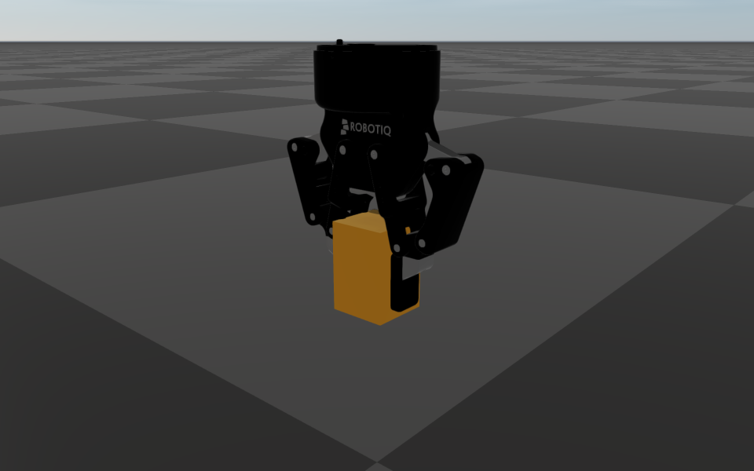

Mimic Joints
A mimic constraint couples two one-degree-of-freedom joints (revolute, continuous or prismatic) of the same articulated system: the follower joint’s position is kept at
with the multiplier \(m\) and the offset \(c\), and its velocity at \(u_\mathrm{follower} = m\, u_\mathrm{leader}\). Typical uses are the second finger of a parallel gripper (\(m = 1\) or \(-1\)), a joint geared to another, and passive joints of a linkage that move in a fixed ratio.
Describing mimic joints
URDF. The standard <mimic> element inside the follower’s <joint>; multiplier
defaults to 1 and offset to 0. A value that is present must be one complete, finite number:
multiplier="2junk" or offset="" is rejected rather than read as 2 or the default.
<joint name="finger_right" type="prismatic">
<parent link="palm"/>
<child link="finger_right_link"/>
<axis xyz="0 1 0"/>
<mimic joint="finger_left" multiplier="-1" offset="0"/>
</joint>
MJCF. A joint equality with linear coefficients,
<equality><joint joint1="follower" joint2="leader" polycoef="a0 a1 0 0 0"/></equality>.
As in MuJoCo, both joints are measured from their reference positions (ref):
\(q_1 - q_{1,\mathrm{ref}} = a_0 + a_1 (q_2 - q_{2,\mathrm{ref}})\). Nonzero higher-order
coefficients, and a joint equality without joint2, are rejected. An equality with
active="false" (on the element, its class or the <default> equality) starts inactive;
RaiSim cannot switch one on at runtime, so it is not loaded, with a warning.
At runtime.
robot->addMimicConstraint("finger_right", "finger_left", -1.0, 0.0);
A joint cannot follow itself, and the floating base, spherical and fixed joints cannot take part;
these cases are rejected. Adding a constraint wakes a sleeping system, and
World::exportToXml() records it (the mimic constraints of the robot description come with
the description). It cannot be added between World::integrate1() and
World::integrate2(), since that step was set up for the old constraints;
addMimicConstraint() then throws std::logic_error.
Dynamics
The constraint couples the joints through a generalized force pair: the follower joint receives a torque \(\tau\) and the leader joint \(-m\,\tau\) (forces, for prismatic joints). This is the action and reaction of an ideal, lossless gear train with ratio \(m\); for \(m = 1\) the two torques are equal and opposite. As a consequence:
the coupling does no work, \(\tau\,(u_\mathrm{follower} - m\,u_\mathrm{leader}) = 0\): it transfers power from one joint to the other without creating or dissipating energy;
each joint torque acts equally and oppositely on the two bodies of its joint, so the coupling never changes the momentum of the system;
a coupled pair accelerates with the gear-reflected inertia. For two independent joints with inertias \(I_l, I_f\) and applied torques \(\tau_l, \tau_f\),
\[\ddot q_\mathrm{leader} = \frac{\tau_l + m\,\tau_f}{I_l + m^2 I_f}, \qquad \tau = I_f\,m\,\ddot q_\mathrm{leader} - \tau_f .\]
The torque is whatever keeps the relation, computed together with everything else that acts in the step (gravity, joint torques, contacts, joint limits, joint friction, loop constraints), so the relation holds at the end of every step regardless of the contact solver’s iteration limit. Contact, joint-limit and joint-friction impulses on either joint are passed on to the other one through the coupling.
Because the relation is linear, holding the velocity relation holds the position relation too:
there is no drift. A position error, for example an initial configuration or a runtime addition
that violates the relation, is measured every step and removed by the velocity the coupling holds,
at the rate of the loop constraints: 30% of the remaining error per step with the default erp,
so it shrinks to a thousandth within 20 steps (see Closed-Loop Systems). Velocities that violate the relation
(set by hand, or joints already moving when the constraint is added) are matched in the next step
by an impulse pair that conserves momentum, like gears suddenly engaging.
Reading the coupling torque
Each mimic constraint appears in World::getContactProblem() as one row with rank
raisim::contact::rank::PROJECTED_MIMIC_CONSTRAINT, appended after the system’s pin and
equality rows in definition order. After a step, imp_i[0] is the generalized impulse on the
follower joint; the leader received -multiplier * imp_i[0]. Divide by the time step for the
torque (or force, for a prismatic joint). pinError_W[0] holds the position error
\(q_\mathrm{follower} - m\, q_\mathrm{leader} - c\) at the beginning of the step, and
jointId the follower’s body index.
Interactions
Drive only the leader. A controller (PD gains, feedforward torque, an actuator) on the follower works against the coupling; the coupling wins, and the follower’s effort is passed on to the leader through the reaction.
Joint limits, velocity limits and joint friction on either joint act on both: a limit on the follower stops the leader at the corresponding position, even when it is the coupling, not a torque on the follower, that drives the follower into it. As for every joint, a limit takes part in a step when the joint violates it at the beginning of the step (after the coupling has moved the velocity); a velocity cap that only an impact within the step drives past acts from the next step.
A mimic constraint that repeats what the model’s loops already enforce (for example, two parallel bars of a parallelogram) is redundant: it is detected, and the motion is unchanged.
Mimic constraints may be chained (C follows B, which follows A). Constraints that repeat each other (B follows A and A follows B with the reciprocal multiplier, a cycle, a duplicate) are redundant, so their offsets must agree: a constraint that contradicts the others (B = A + 1 and A = B + 1, which no configuration satisfies) is rejected.
A system with mimic constraints integrates with
TRAPEZOIDwhenRUNGE_KUTTA_4is requested (see Closed-Loop Systems).Tendon and wire responses preserve the eliminated mimic velocity relation.
A mimic row that the numerical rank selection cannot enforce emits a warning; remove or rescale near-dependent relations rather than relying on that dropped row.
Example
Server Example: Robotiq Gripper Mimic: a Robotiq 2F-85 gripper whose five passive finger joints follow one actuated knuckle picks up a box.


The Robotiq 2F-85 holding a box it has lifted. One knuckle is actuated; the other five finger joints mimic it (multipliers 1 and -1), which keeps the pads parallel.
Mimic constraints versus tendon couplings
A mimic constraint is rigid and lossless. For a coupling with compliance, damping, limits on the transmitted force, or slack, use a fixed tendon or a tendon coupling (see Tendons), which the contact solver iterates.